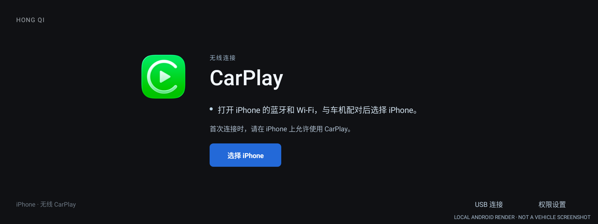
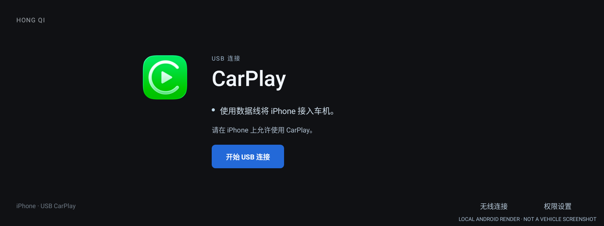
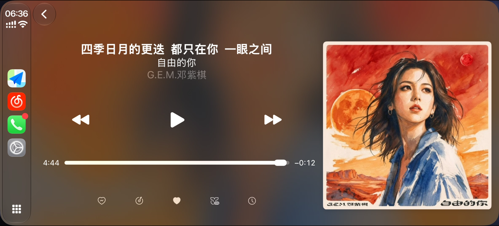
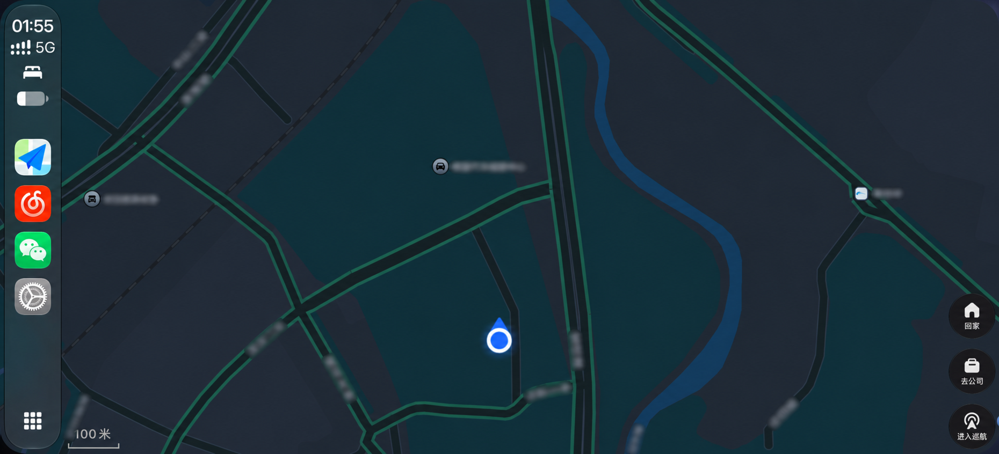
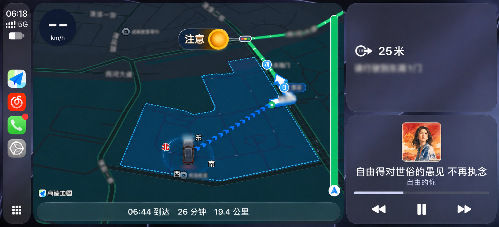

安装到车机
先确认车机兼容性，再通过车机支持的方式安装。打开 CarPlay，按提示完成连接所需权限。首次安装可在交流群咨询。
为适配的安卓车机带来熟悉的 CarPlay。
导航、音乐与通话，随你一起出发。
连接、音乐、导航与导航分屏，切换看看中控画面。
导航类图片中的街道及地点信息已做局部模糊处理。





支持 2023、2024、2025 款红旗 HS5。
应用安装在 Android 车机端，iPhone 无需安装额外应用。
具体安装方式可在 Autunnplay交流群咨询。
从第一次安装，到每一次上车。
先确认车机兼容性，再通过车机支持的方式安装。打开 CarPlay，按提示完成连接所需权限。首次安装可在交流群咨询。
开启手机 Wi-Fi 与蓝牙。与车机完成蓝牙配对，在连接页选择 iPhone；也可切换到 USB 连接，使用数据线接入。
首次连接时，在 iPhone 上允许使用 CarPlay。连接后即可使用手机上的导航、音乐与通话。
把事情说清楚，
让连接更简单。
适配 2023、2024、2025 款红旗 HS5。可加入 Autunnplay交流群交流对应年款的安装和使用。
CarPlay 应用安装在 Android 车机上，iPhone 无需安装 Autunn Play。当前应用要求 Android 9.0 或以上。
普通 CarPlay 仪表投屏保留红旗 HS5 原厂仪表框架，显示全屏地图；车速、挡位、水温和油量等原厂信息仍由原厂仪表显示。
无线连接时，开启 iPhone 的 Wi-Fi 与蓝牙，与车机完成配对后选择 iPhone。有线连接时，使用数据线将 iPhone 接入车机并选择 USB 连接。首次连接请在 iPhone 上允许使用 CarPlay。
加入 Autunnplay交流群，说明 HS5 年款、手机型号、iOS 版本以及使用无线还是 USB 连接，方便一起排查。